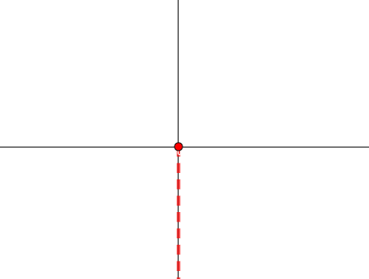
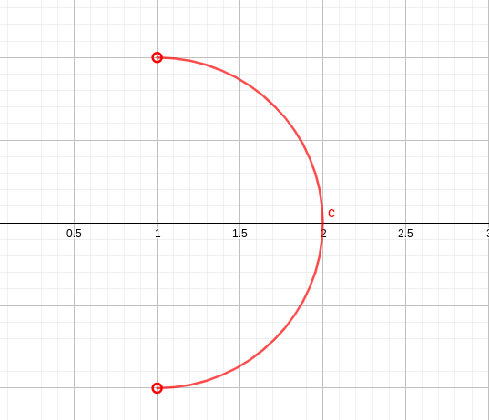
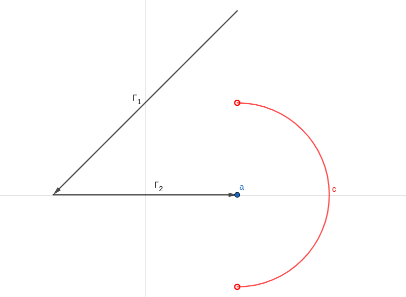

Ejercicio 1: Calcular la solución general de la ecuación en diferencias siguiente:
$$ y^{n+1} - y^n -y^{n-1} + y^{n-2} = a $$
Donde $a$ es un número real positivo.
Estamos ante una ecuación lineal de coeficientes constantes. El procedimiento a seguir será:
- Resolver las raíces del polinomio característico.
- Calcular la solución de la ecuación homogénea asociada.
- Calcular una solución particular de la ecuación completa.
- Calcular la solución general de la ecuación completa.
Comencemos. El polinomio característico es el siguiente:
$$ \lambda^{3}-\lambda^{2}-\lambda+1=0$$
Factorizamos usando Ruffini, resultando:
$$ P(\lambda)=(\lambda-1)^{2}(\lambda+1)$$
Cuyas raíces son:
$$ \begin{cases}\lambda_{1}=1 & \text { (doble) } \\ \lambda_{2}=-1 & \text { (simple) }\end{cases}$$
Como se trata de una ecuación en diferencias de orden 3, el número de soluciones linealmente independientes es 3, de manera que la solución general de la ecuación homogénea asociada es:
$$ y_{H}^{n}=\left(c_{0}+c_{1} n\right) 1^{n}+c_{2}(-1)^{n}=\left(c_{0}+c_{1} n\right)+c_{2}(-1)^{n}$$
Para ciertas constantes $c_0$, $c_1$ y $c_2$ (que se podrían determinar si nos dieran condiciones iniciales).
La solución particular de la completa la debemos calcular analizando la forma del término forzante $G(n)$ (que es $a$, escrito como $p_1^{*}(n) \cdot r_1^n +...+ p_w^{*}(n) \cdot r_w^n $)
$$ G(n) = P_{1}^{*}(n) 1^{n}=a 1^{n} $$
Como $r$ es raíz del polinomio característico de la ecuación homogénea, se prueban soluciones de la forma $y_{p}^{n}=Q_{1}(n) 1^{n}$, con $Q_{1}(n)$ polinomio de grado $\alpha_1 + \beta = 2$:
- $\beta$ es el grado de $P_1^*$, que es 0
- $\alpha_{1}$ es la multiplicidad de $r=1$ como raíz, que es 2
Determinamos los coeficientes del polinomio $Q = a + bn + cn^2$ para que sea solución, lo que da:
$$ c=\frac{a}{4} $$
Nota: los otros dos coeficientes los podemos elegir como queramos; quedan sin determinar, porque en realidad estamos calculando todas las soluciones particulares, lo que incluye todas las soluciones de la homogénea. La posibilidad más sencilla es tomar ambos iguales a cero.
Por tanto, la solución general de la ecuación es:
$$ y^{n}=\left(c_{0}+c_{1} n+\frac{a}{4} n^{2}\right)+c_{2}(-1)^{n}$$
Ejercicio 2: Calcular el dominio de analiticidad de la función siguiente:
$$ f(z)=\log \left(\frac{z-a(1+i)}{z-a(1-i)}\right) \text{ con } a>0$$
Donde:
$$ \log z=\operatorname{Ln}|z|+i \arg z, \quad-\frac{\pi}{2}<\arg z \leq \frac{3 \pi}{2}$$
Después, calcular $f'(z)$ donde sea analítica. Y por último, calcular la siguiente integral:
$$ \int_{\Gamma} f^{\prime}(z) f(z) d z$$
Donde la curva $\Gamma$ es la unión de dos rectas: $\Gamma=\Gamma_{1} \cup \Gamma_{2}$, con:
- $\Gamma_1$ el segmento orientado con origen en $a(1+2 i)$ y final en el punto $-a$.
- $\Gamma_2$ el segmento orientado con origen en $-a$ y final en $a$.
En primer lugar, se trata de averiguar el dominio de definición de un logaritmo que no es el principal. El logaritmo principal está definido en base al argumento principal, pero si en lugar del argumento principal se toma otra definición del argumento, obtenemos otra rama del logaritmo.
Procederemos de la siguiente manera:
- Encontraremos el dominio de definición de este logaritmo.
- Encontraremos el dominio de definición de la función a la que se aplica el logaritmo, es decir, $\left(\frac{z-a(1+i)}{z-a(1-i)}\right)$
- La intersección de ambas condiciones nos dará el dominio pedido.
En segundo lugar, donde la función sea analítica calcularemos la derivada (usando las reglas habituales de derivación).
Y por último, calcularemos la integral de línea intentando, si es posible, aplicar independiencia del camino para simplificar los cálculos.
El argumento particular que nos han dado está definido en todo el plano salvo en el rayo rojo de la figura:
 Por tanto, el logaritmo tiene como dominio todo el plano complejo salvo el rayo anterior (dado por $\text{Re}(z)=0 \text{ , Im}(z)\leq 0$).
Ahora, ¿para qué valores de $z$ la función $g(z)= \left(\frac{z-a(1+i)}{z-a(1-i)}\right)$ cumple $\text{Re}(g(z))=0 \text{ , Im}(g(z))\leq 0$?
$$ g(z)=\frac{z-a(1+i)}{z-a(1-i)}=\frac{(x-a)+i(y-a)}{(x-a)+i(y+a)}=\frac{(x-a)^{2}+y^{2}-a^{2}}{(x-a)^{2}+(y+a)^{2}}+i \frac{-2 a(x-a)}{(x-a)^{2}+(y+a)^{2}}$$
Luego:
$$ \left\{\begin{array}{l}\operatorname{Re}(g(z))=0 \quad \Longleftrightarrow(x-a)^{2}+y^{2}=a^{2} \\ \operatorname{Im}(g(z)) \leq 0 \Longleftrightarrow-2 a(x-a) \leq 0 \stackrel{a>0}{\Longleftrightarrow} x \geq a\end{array}\right.$$
Por tanto, la región que debemos excluir del dominio es una semicircunferencia que no incluye los extremos. Podemos dibujarla para $a=1$ por ejemplo:
 Por otro lado, en los extremos de la circunferencia el denominador de $g(z)$ se anula, por lo que hay que quitarlos. Así que:
$$ D=\mathbb{C}\smallsetminus \left\{z=a+a e^{i \theta} \text { con }-\frac{\pi}{2} \leq \theta \leq \frac{\pi}{2}\right\}$$
Para el segundo apartado, la derivada se calcula de manera inmediata:
$$f^{\prime}(z)=\frac{2 a i}{(z-a(1-i))(z-a(1+i))}=\frac{2 a i}{(z-a)^{2}+a^{2}}$$
Y para el tercer apartado, veamos si hay independencia del camino. La función que estamos integrando es $f(z)f'(z)$. Esta función es el producto de dos funciones analíticas (en su dominio), y por tanto es una función analítica (recordemos que integrar y derivar una función analítica da lugar a funciones analíticas).
Ahora, la curva donde integramos está en efecto dentro del dominio de analiticidad de la función, como se ve en la figura:
 De manera que hay independencia del camino. Además, el integrando tiene una primitiva inmediata: $\frac{(f(z))^2}{2}$. Por ello la integral solicitada es:
$$ I=\int_{\Gamma} f^{\prime}(z) f(z) d z=F\left(z_{2}\right)-F\left(z_{1}\right)=\frac{1}{2}\left(f\left(z_{2}\right)^{2}-f\left(z_{1} \right)^{2}\right) $$
Es decir:
$$ I =\frac{-1}{2}\left(\pi^{2}+(\operatorname{Ln} 3)^{2}\right)$$